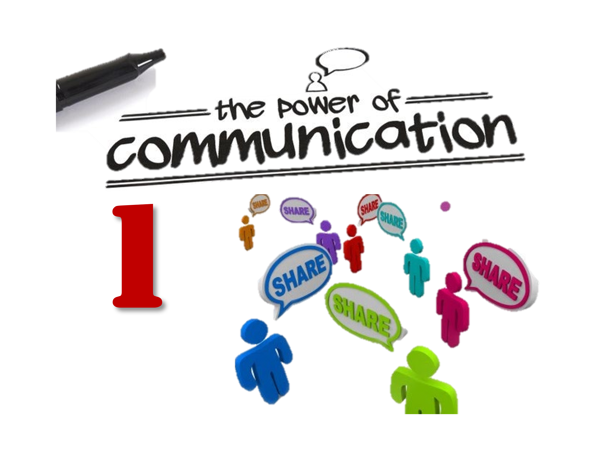
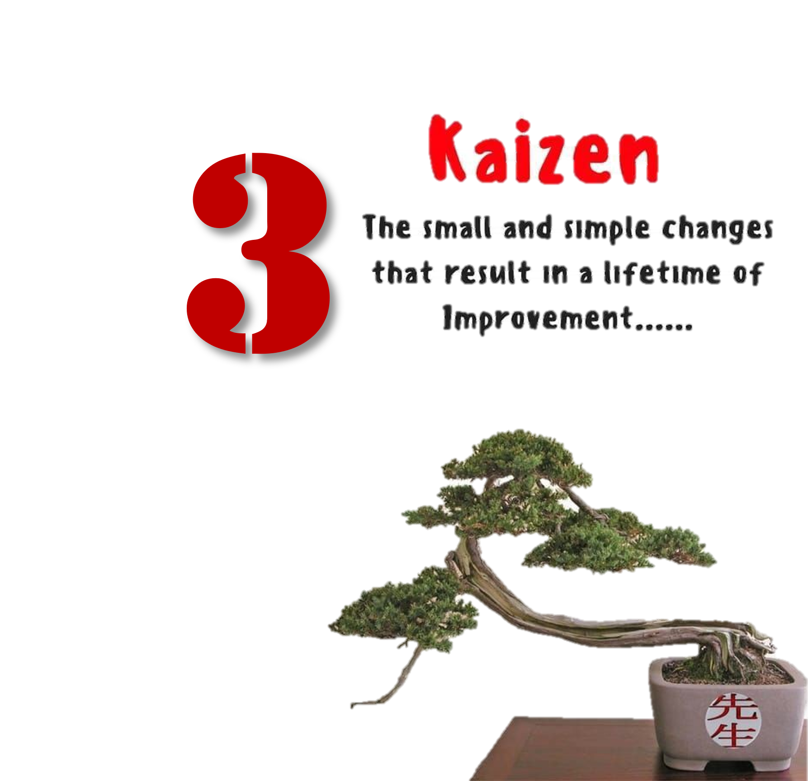
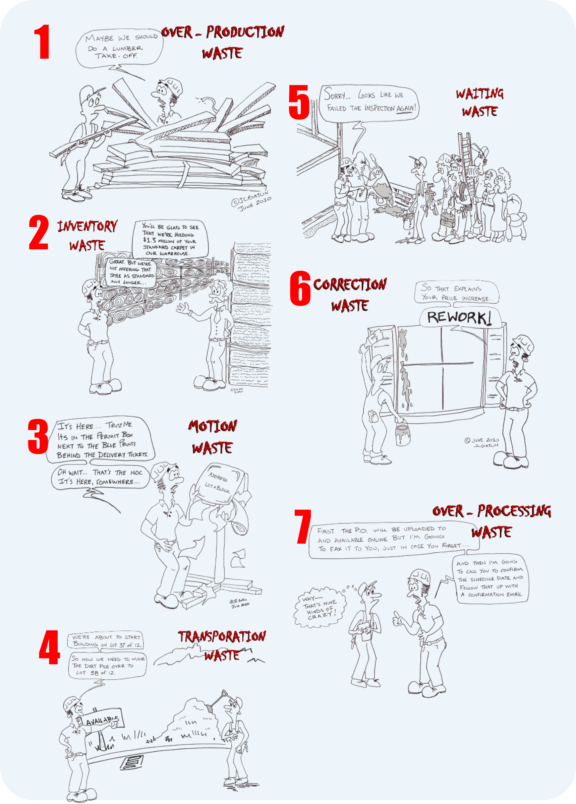
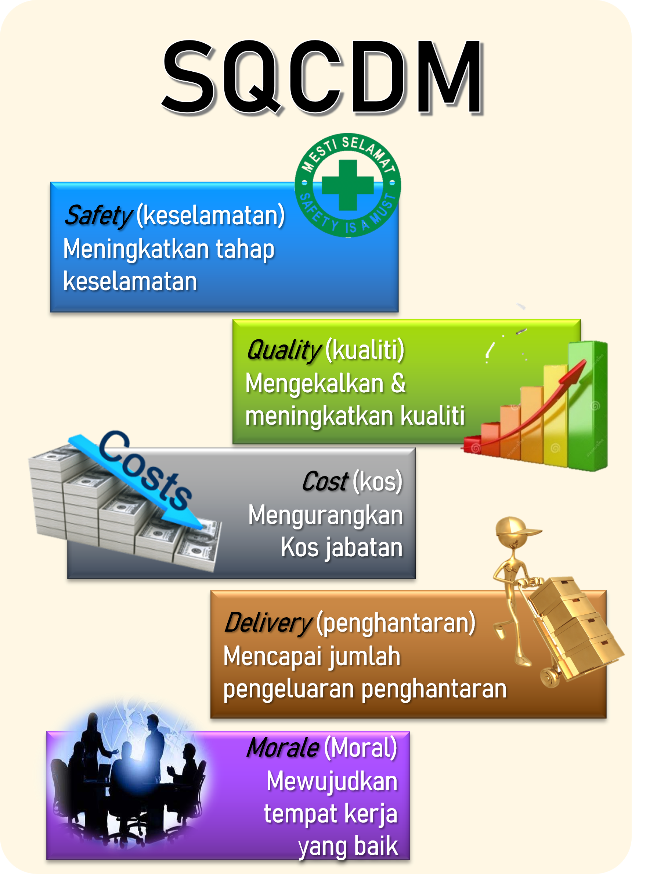
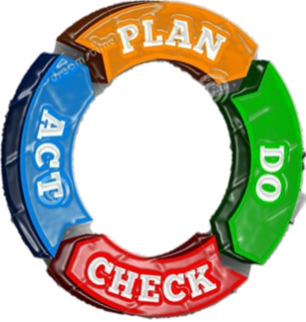
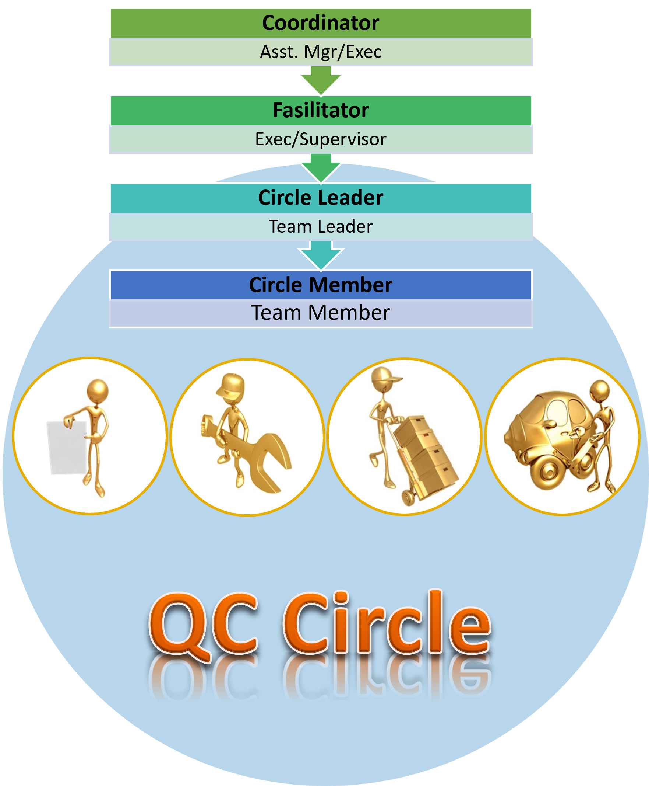
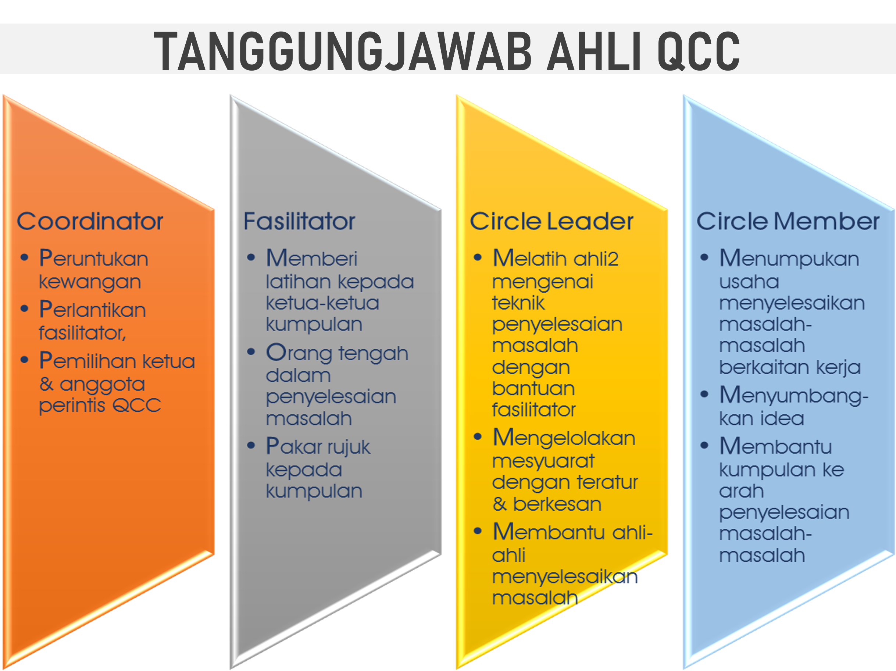

Manual Evaluation Sheet
Objektif QCC

Komunikasi
Kerjasama Berpasukan

Kaizen
Manfaat QCC
「MANFAAT」
Melakukan kerja dengan lebih mudah
dan menambahbaik kualiti produk
Menghapuskan kesukaran dalam membuat
kerja dan kerja lebih proaktif
Menjadikan kerja lebih selamat
Menjimatkan masa dan kos
Fokus Projek QCC
7 MUDA

Hapuskan Pembaziran untuk peningkatan produktiviti
SQCDM

Pendekatan QCC
RANCANG
Langkah 1
- Kenalpasti masalah/projek
- Sebab masalah dipilih
Langkah 2
- Keadaan masalah
Langkah 3
- Analisa data
- Cadangkan tindakan dan penambahbaikan
60%
BERTINDAK
Langkah 7
- Sokongan pengurusan untuk penyelarasan tatacara tindakan
- Kaji semula semua tindakan
- Kaji dan buat penambahbaikan masalah kecil (jika ada)
- Ulang PDCA jika objektif/sasaran tidak tercapai
10%

20%
LAKSANA
Langkah 5
- Melatih untuk melaksana
- Melaksana tindakan penambahbaikan
- Menyimpan semua rekod mengenai tindakan
10%
MEMERIKSA
Langkah 6
- Tentukan tindakan mengikut yang ditetapkan
- Bandingkan hasil/data sebelum dan selepas
- Keburukan dapat dihapuskan
- Keberkesanan tidak langsung
Penubuhan Kumpulan QCC

